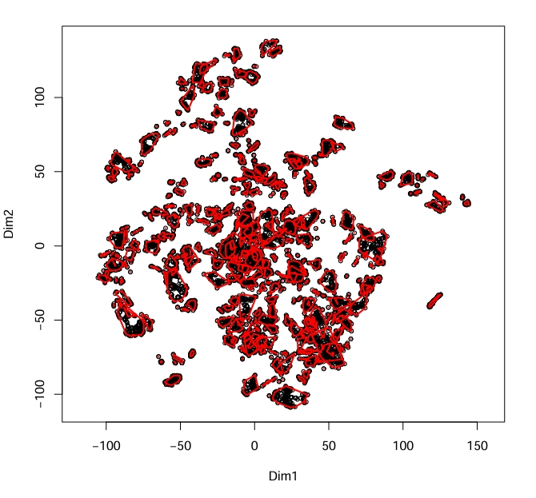
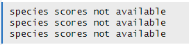
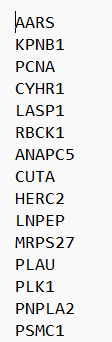
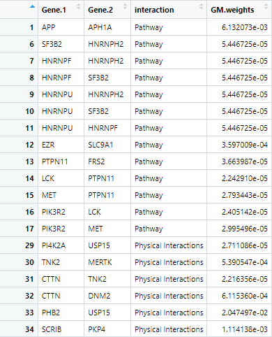

Filtered CoCluster Correlation Network Creation Guide
Nagashree A, McKayl Bailey, Grant Smith, Madison Moffett
CoClusterCorrelationNetwork.RmdThis Package
The CCCN_CFN package takes experimental data of post-translational modifications based on experimental conditions and generates clusters of likely pathways. These pathways are generated based on analysis of which ptms cluster together (in their ptms based on the same environmental conditions) compared to how those proteins are known to interact (using the STRINGdb database).
An important note about this package: there are no returned outputs from any of the functions. All outputs listed are assigned to the Global Namespace in order to prevent loss of data and promote ease of use. Some functions also pull variables from the global namespace. Ensure that all data is loaded into the global environment especially if analysis is completed across multiple sessions.
This File
This vignette is intended to be a step-by-step guide to walk users through the process of using the CCCN_CFN package. It includes an example pipeline demonstrating how to run the full analysis along with descriptions of each function. this pipeline must be run in order as subsequent steps require the data produced in previous steps. Estimated run-times are included with each description and are based on a preliminary dataset of ~9,000 post-translational modifications and 70 experimental conditions processed with a 12th Gen i5 processor and 8GB of RAM.
Pipeline
Step 1: Make Cluster List
Code
MakeClusterList(ptmtable, toolong = 3.5)
Figure 1 Example plot produced by MakeClusterList
calculated using Euclidean Distance

Figure 2 Output of MakeClusterList
#> $`1`
#> PTM.Name group
#> 1 AARS ubi K747 1
#> 2 ANAPC5 ubi K289 1
#> 3 CUTA ubi K112 1
#> 4 CYHR1 ubi K349 1
#> 5 EEF2 ack K498 1
#> 6 F11R ubi K97 1
#> 7 GMPS ack K9 1
#> 8 HERC2 ubi K20 1
#> 9 KPNB1 ubi K541 1
#> 10 LASP1 ubi K59 1
#> 11 LNPEP ubi K32 1
#> 12 MRPS27 ubi K94 1
#> 13 NME1 ack K39 1
#> 14 PCNA ubi K110 1
#> 15 PKM ack K141 1
#> 16 PLAU ubi K403 1
#> 17 PLK1 ubi K492 1
#> 18 PNPLA2 ubi K435 1
#> 19 PSMC1 ubi K237 1
#> 20 RBCK1 ubi K342 1
#> 21 RPS15A ubi K12 1
#> 22 TCAF1 ubi K817 1
#> 23 TUBB4B ubi K379; TUBB2A ubi K379; TUBB2B ubi K379 1
#> 24 UIMC1 ubi K245 1
#> 25 USP5 ubi K318 1
#> 26 VAMP7 ubi K125 1
#> 27 VCP ubi K295 1Figure 3 First cluster created by Euclidean Distance
Description
Make Cluster List is the first step in the analyzing one’s data. This function takes the post-translational modification table and runs it through three calculations of distance: Euclidean Distance, Spearman Dissimilarity (1 - |Spearman Correlation|), and the average of the two of these. These calculations find the ‘distance’ between ptms based upon under what conditions they occur. These matricies are then run through Tsne in order to put them into a 3-dimensional space. Please note: Tsne involves an element of randomness; in order to get the same results, set.seed(#) must be called. A correlation table is also produced based on the Spearman Correlation table.
Input
- ptmtable
- A data frame with rows of ptms and columns of experimental
conditions
- A data frame with rows of ptms and columns of experimental
conditions
- toolong
- Defaults to 3.5; threshold for cluster separation
Output
- ptm.correlation.matrix
- A data frame showing the correlation between ptms (as the rows and
the columns). NAs are placed along the diagonal
- A data frame showing the correlation between ptms (as the rows and
the columns). NAs are placed along the diagonal
- eu_ptms_list
- A three-dimensional data frame used to represent ptms in space to
show relationships between them based on distances. Based on Euclidean
Distance
- A three-dimensional data frame used to represent ptms in space to
show relationships between them based on distances. Based on Euclidean
Distance
- sp_ptms_list
- A three-dimensional data frame used to represent ptms in space to
show relationships between them based on distances. Based on Spearman
Dissimilarity
- A three-dimensional data frame used to represent ptms in space to
show relationships between them based on distances. Based on Spearman
Dissimilarity
- sed_ptms_list
- A three-dimensional data frame used to represent ptms in space to show relationships between them based on distances. Based on the average between Euclidean Distance and Spearman Dissimilarity.
Step 2: Make Correlation Network
Code
MakeCorrelationNetwork(keeplength = 2)
Figure 4 First 17 rows and columns of the cccn_matrix
produced by MakeCorrelationNetwork
Description
Make Correlation Network first finds the intersection between the Euclidian, Spearman, and SED Tsne matrices in order to find the intersection between the three groups. It then adds the Genes in these PTMs to a list of common clusters and turns it into an adjacency matrix. This adjacency matrix is used to filter relevant data — clusters — from the Spearman correlation matrix. The resultant cccn_matrix showing strength of relationships between proteins using the common clusters between the three distance metrics is returned a matrix.
Input
- keeplength
- Defaults to 2; MakeClusterList only saves subsets whose size is
strictly greater than keeplength. (I.e. [‘AARS’, ‘ABR’] will be
discarded unless keeplength < 2)
- Defaults to 2; MakeClusterList only saves subsets whose size is
strictly greater than keeplength. (I.e. [‘AARS’, ‘ABR’] will be
discarded unless keeplength < 2)
- From Global Namespace:
- Should not but listed in function call, but user
must ensure that it is in the gloal environment
- ptm.correlation.matrix
- A data frame showing the correlation between ptms (as the rows and the columns). NAs are placed along the diagonal.
- eu_ptms_list
- A three-dimensional data frame used to represent ptms in space to
show relationships between them based on distances. Based on Euclidean
Distance
- A three-dimensional data frame used to represent ptms in space to
show relationships between them based on distances. Based on Euclidean
Distance
- sp_ptms_list
- A three-dimensional data frame used to represent ptms in space to
show relationships between them based on distances. Based on Spearman
Dissimilarity
- A three-dimensional data frame used to represent ptms in space to
show relationships between them based on distances. Based on Spearman
Dissimilarity
- sed_ptms_list
- A three-dimensional data frame used to represent ptms in space to show relationships between them based on distances. Based on the average between Euclidean Distance and Spearman Dissimilarity
- Should not but listed in function call, but user
must ensure that it is in the gloal environment
Pre-Step 3: Retrieve Alternate Edgefiles (OPTIONAL)
Description
NOTE: This step is optional but provides more information for filtering data.
This step requires more effort from the user than any other step but the package still attempts to simplify this process. First, the user runs make_db_input in order to produce a text file that has all of the gene names separated by new lines. This information can then be put into the user’s choice of databases to find more interactions. If GeneMANIA on the Cytoscape app is the chosen database, another function (processGMedgefile) processes this file for the user. If other databases are used, the user of the package must process this data themselves. The file put into Step 3 should have three columns as follows: Gene.1, Gene.2, and the edgeweight of that specified database. Note that Gene.1 and Gene.2 are strict headers and must be named as such for proper integration with other PPI networks.
Part 1: Get File for Database Input
Code
make_db_input(cccn_matrix, file.path.name = "db_nodes.txt")Figure 5 First 15 lines from the produced text file
Input
- cccn_matrix
- A matrix showing strength of relationships between proteins using
the common clusters between the three distance metrics
- A matrix showing strength of relationships between proteins using
the common clusters between the three distance metrics
- file.path.name
- Desired path for file to be saved as
Part 2 — Process GeneMANIA File
Code
processGMedgefile(gm.edgefile.path, gm.nodetable.path, nodenames, gm.network.name = "gm_network")Figure 6 First 44 rows of the GeneMANIA network
Input
- gm.edgefile.path
- Path to the GeneMANIA edgefile
- gm.nodetable.path
- Path to the GeneMANIA nodetable
- db_nodes.path
- Path to the nodenames file created in make_db_input
- gm.network.name
- Desired name for the output of the GeneMANIA network
Step 3: Find PPI Edges
Code
find_ppi_edges(cccn_matrix, db_file_paths = c())
Figure 7 First 19 rows of the ppi_network produced by
find_ppi_edges
Description
Note: Examples take about 5-10 minutes to run.
Protein-Protein Interaction (or PPI) networks are networks that show us how different proteins are known interact with each other. STRINGdb — a database of these PPI networks — is automatically consulted along with any other database files that are generated and entered by the user. It then gathers data from the PPI networks and filters them down to only examine the determined genes of interest. The data from STRINGdb and any provided files are then combined and returned. The returned data frame shows how strongly the proteins are known to interact.
Step 4: Cluster Filtered Network
Code
ClusterFilteredNetwork(accuracy)
Figure 8 First 19 rows of the cfn_network produced by
ClusterFilteredNetwork
Description
Note: This function, like the ones before it, will pull required data from the global environment. Requires both a cccn_matrix and a list of PPI edges. Checks all PPI edges to see if their edge weight is equal (or under the bounds of the accuracy parameter) to the weight of the same edge in the matrix. If it is not, then it will be removed from the list of PPI edges.
Input
- accuracy
- The maximum difference allowed for a PPI edge to still be “equal” to
the cccn value
- The maximum difference allowed for a PPI edge to still be “equal” to
the cccn value
- From Global Namespace:
- Should not but listed in function call, but user
must ensure that it is in the gloal environment
- cccn_matrix
- A matrix showing strength of relationships between proteins using
the common clusters between the three distance metrics
- A matrix showing strength of relationships between proteins using
the common clusters between the three distance metrics
- ppi_network
- A dataframe representing how strongly proteins are known to interact
- Should not but listed in function call, but user
must ensure that it is in the gloal environment